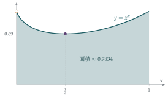

STEP III 2009、第8問
先に進む前に問題を読んでおこう。問題は STEP Support Programme の問題データベースにある： step.maths.org/questions/09-s3-q8
導入
誰でも遅かれ早かれ、\((a + b)^2 \neq a^2 + b^2\) であることを学ぶ。この誤った等式は、冗談めかして「新入生の夢」（freshman’s dream）と呼ばれている。この問題で証明するのは、同じくらい初心者の間違いのように見える次の等式である。 \[\int_0^1 x^x\,\mathrm{d}x = \sum_{n=1}^{\infty} \frac{(-1)^{n+1}}{n^n} = 1 - \frac{1}{2^2} + \frac{1}{3^3} - \frac{1}{4^4} + \cdots,\] そしてその姉妹版 \(\int_0^1 x^{-x}\,\mathrm{d}x = \sum_{n=1}^\infty \frac{1}{n^n}\) である。\(x^x\) の積分が \(n^{-n}\) の和に化ける。話がうますぎて本当とは思えない。だからこそ、これは二年生の夢（sophomore’s dream）と呼ばれるのである。しかし、これは正しく、1697年にヨハン・ベルヌーイ（Johann Bernoulli）が発見した。
証明には、大学で絶えず出会うことになる三つの考え方が使われる。指数関数と累乗を比べる極限（limit）、漸化式（reduction formula）、そして関数をべき級数（power series）に展開して項別に積分すること（term-by-term integration）である。
取りかかる前に
関数 \(x^x\) は、\(x = 0\) では既知のどの式によっても定義されない（\(0^0\) は定まらない）。\(x\) が上から \(0\) に近づくとき、この関数はどのように振る舞うだろうか。電卓で \(x = 0.1\)、\(0.01\)、\(0.001\) を試してみよ。
\(0.1^{0.1} \approx 0.794\)、\(0.01^{0.01} \approx 0.955\)、\(0.001^{0.001} \approx 0.993\) である。どうやら \(1\) に近づくようだ。小問 (i) はこれを証明するものであり、これによって被積分関数（integrand）が \(0\) の近くで行儀よく振る舞い、積分が意味をもつことがわかる。\((0, 1]\) における \(x^x\) のグラフは \(1\) の近くから始まり、下がって最小値をとったあと、\(x = 1\) で \(1\) に戻る（図 4.5.1）。
順を追って解く
段階 1 累乗は対数に勝つ
\(x \to 0^+\) のとき \(\ln x \to -\infty\) である。どのような置換をすれば、\(x \to 0^+\) が \(t \to \infty\) に変わり、\(x^m(\ln x)^n\) が \(e^{-mt}t^n\) のような形に変わるだろうか。
\(x = e^{-t}\) とおく。\(x \to 0^+\) のとき \(t \to \infty\) であり、\(\ln x = -t\) であるから、 \[x^m(\ln x)^n = e^{-mt}(-t)^n = (-1)^n e^{-mt}t^n \to 0.\] 言葉で言えば、\(x \to 0\) のとき、\(x\) の任意の正の累乗が \(0\) に近づく速さは、\(\ln x\) の任意の累乗が発散する速さに勝る、ということである。■
\(m = n = 1\) とすれば \(x\ln x \to 0\) であり、指数関数（exponential function）は連続（continuous）であるから、\(x^x = e^{x\ln x} \to e^0 = 1\) である。■
段階 2 漸化式
\(I_{n+1} = \int_0^1 x^m(\ln x)^{n+1}\,\mathrm{d}x\) を部分積分（integration by parts）せよ。どちらの因子を積分すべきだろうか。\(x = 0\) における境界項（boundary term）はどうなるだろうか。
\(x^m\) を積分し、\((\ln x)^{n+1}\) を微分すると、 \[I_{n+1} = \left[\frac{x^{m+1}}{m+1}(\ln x)^{n+1}\right]_0^1 - \int_0^1 \frac{x^{m+1}}{m+1}\cdot\frac{(n+1)(\ln x)^n}{x}\,\mathrm{d}x.\] \(x = 1\) では \(\ln 1 = 0\) であるから境界項は \(0\) である。\(x \to 0\) のときは、小問 (i)（\(m+1\) と \(n+1\) を用いる）により \(0\) に収束する。残った積分は \(\frac{n+1}{m+1}I_n\) であるから、 \[I_{n+1} = -\frac{n+1}{m+1}I_n. \qed\] \(I_0 = \int_0^1 x^m\,\mathrm{d}x = \frac{1}{m+1}\) から始めて、この式を \(n\) 回適用すれば、 \[I_n = (-1)^n\frac{n!}{(m+1)^{n}}\cdot\frac{1}{m+1} = \frac{(-1)^n\,n!}{(m+1)^{n+1}}. \qed\]
段階 3 級数
\(e^y\) の級数を用いて \(x^x = e^{x\ln x}\) を展開せよ。各項はどのような形になるだろうか。\(m\) をどの値にすれば小問 (ii) の積分が現れるだろうか。
すべての \(y\) について \(e^y = \sum_{n=0}^\infty \frac{y^n}{n!}\) であるから、 \[x^x = e^{x\ln x} = \sum_{n=0}^{\infty} \frac{x^n(\ln x)^n}{n!}.\]
小問 (ii) を \(m = n\) として用い（\(n = 0\) は別に扱う）、\(0\) から \(1\) まで項別に積分せよ。何が得られるだろうか。
\(n = 0\) の項は \(1\) であり、積分すると \(1\) になる。\(n \geq 1\) については、小問 (ii) で \(m = n\) とすると \(\int_0^1 x^n(\ln x)^n\,\mathrm{d}x = \frac{(-1)^n\,n!}{(n+1)^{n+1}}\) となるので、第 \(n\) 項の寄与は \(\frac{(-1)^n}{(n+1)^{n+1}}\) である。これらを足し合わせると、 \[\int_0^1 x^x\,\mathrm{d}x = 1 - \frac{1}{2^2} + \frac{1}{3^3} - \frac{1}{4^4} + \cdots. \qed\] （\(n = 0\) の項も同じパターン \(\frac{1}{1^1}\) に当てはまる。）項は極めて速く小さくなる。7項とれば、値 \(0.783430\ldots\) が小数第6位まで得られる。

振り返り
置換して増加の速さを比べる。 \(x = e^{-t}\) とおくことで、\(0\) における極限が、なじみのある \(\infty\) における極限に変わった。
境界項は確認が必要である。 漸化式は \(x = 0\) で境界項が消えることに依存しており、そこで小問 (i) が使われた。
級数にしてから積分する。 被積分関数をべき級数に展開して各項を積分することで、初等的な原始関数（antiderivative）をもたない積分が、速く収束する和に変わった。
背後にある数学
ステージ3では、無限和と積分をさりげなく交換した。すなわち \(\int \sum = \sum \int\) である。これはいつでも許されるわけではない。大学では、これが成り立たない例や、どのようなときに安全かを述べる定理に出会うことになる。最も簡単な定理は、級数が一様収束（uniform convergence）するとき、すなわち級数の残りの部分をすべての \(x\) で同時に小さくできるときには安全である、というものである。ここでは \((0, 1]\) 上で \(|x\ln x| \leq \frac1e\) であるから、\(x\) が何であっても、第 \(n\) 項の大きさは高々 \(\frac{e^{-n}}{n!}\) である。これらの上界の和は収束するので、残りの部分は一様に小さく、交換は正当化される。この議論はワイエルシュトラス（Weierstrass）の M 判定法（Weierstrass M-test）と呼ばれ、解析学の主力となる道具の一つである。
なぜ「夢」が成り立つのか
この恒等式は特別である。\(\frac{(x\ln x)^n}{n!}\) における累乗と、積分 \(\int_0^1 x^n(\ln x)^n\,\mathrm{d}x = \frac{(-1)^n n!}{(n+1)^{n+1}}\) とがぴったり対応し、\(n!\) が完全に打ち消し合うことに依存しているのである。その根底では、この積分は姿を変えたガンマ関数（Gamma function）である。置換 \(x = e^{-t/(n+1)}\) によって、これは \(\frac{(-1)^n}{(n+1)^{n+1}}\int_0^\infty t^n e^{-t}\,\mathrm{d}t = \frac{(-1)^n\,\Gamma(n+1)}{(n+1)^{n+1}}\) となり、第 4.4 節 とつながる。
名前の由来
「二年生の夢」という名前は、Jonathan Borwein とその共著者たちが2004年の著書 Experimentation in Mathematics の中で、「新入生の夢」\((a + b)^n = a^n + b^n\) と対をなすものとして名づけた。（興味深いことに、「新入生の夢」はある種の数の体系では正しい。素数 \(p\) を法とする算術（arithmetic modulo a prime）では、中間の二項係数（binomial coefficient）がすべて \(p\) で割り切れるので、\((a + b)^p = a^p + b^p\) が成り立つのである。）Borwein は実験数学（experimental mathematics）の先駆者であった。実験数学では、このような恒等式をコンピュータを使って発見し、そのあとで人の手で証明する。
思考のスキル
被積分関数が、各項を積分できるようなべき級数をもつならば、各項を積分して結果を足し合わせよ。
これは、初等的な原始関数をもたない積分を計算する強力な方法である。和と積分の交換が正当化されるかどうかを常に問うこと。たいていは正当化されるが、その理由を知っておくべきである。
次の一歩
姉妹版。 \(\displaystyle\int_0^1 x^{-x}\,\mathrm{d}x = \sum_{n=1}^{\infty}\frac{1}{n^n} \approx 1.2913\) を示せ。
最小値。 \(x^x\) は \((0, \infty)\) において \(x = \frac1e\) で最小値 \(e^{-1/e}\) をとることを示せ。
何項必要か。 項が減少する交代級数（alternating series）では、途中で打ち切ったときの誤差は、最初に省いた項よりも小さい。\(\int_0^1 x^x\,\mathrm{d}x\) の級数で小数第6位まで求めるには、何項必要だろうか。
いとこ。 同じ方法を用いて、\(\displaystyle\int_0^1 x^2\ln x\,\mathrm{d}x = -\frac19\) であること、および \(\displaystyle\int_0^1 \frac{\ln x}{1 - x}\,\mathrm{d}x = -\sum_{n=1}^\infty \frac{1}{n^2}\) であることを示せ。（第 2.4 節 により、これは \(-\frac{\pi^2}{6}\) である。）
さらに学ぶために
Jonathan Borwein, David Bailey & Roland Girgensohn, Experimentation in Mathematics（A. K. Peters）。名前の出典であり、コンピュータによって発見された恒等式がほかにも数多く載っている。
William Dunham, The Calculus Gallery（Princeton University Press）。ニュートン（Newton）からルベーグ（Lebesgue）に至る解析学の傑作を集めた本で、ベルヌーイの業績も含まれている。
Mary Hart, Guide to Analysis（Palgrave）。一様収束と、和と積分を交換できる条件について明快に解説している。